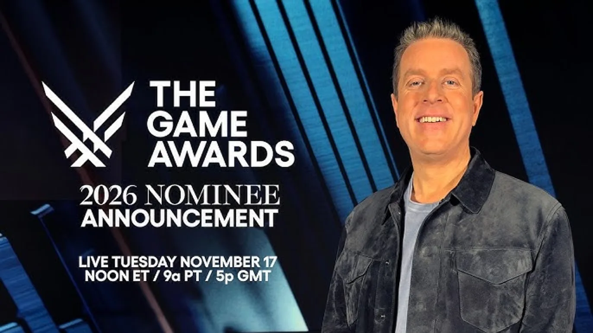

Grand Theft Auto VI se convirtió en el juego con más nominaciones de The Game Awards 2026, después de que se anunciara la lista de candidatos para la ceremonia que reconoce a los principales lanzamientos del año. La nueva producción de Rockstar Games consiguió ocho candidaturas, incluida la categoría más importante de la noche: Juego del Año. El anuncio se realizó el 17 de noviembre durante una transmisión presentada por Geoff Keighley, apenas dos días antes del lanzamiento comercial del esperado título.
El reconocimiento contempla distintas áreas de la producción, desde la dirección y la narrativa hasta el apartado artístico y técnico. Las ocho nominaciones de GTA VI corresponden a Juego del Año, Mejor Dirección de Juego, Mejor Narrativa, Mejor Dirección de Arte, Mejor Música y Banda Sonora, Mejor Diseño de Audio, Mejor Interpretación —por el trabajo de Manni L. Perez como Lucia Caminos— y Mejor Juego de Acción/Aventura.
La presencia del juego en tantas categorías resulta especialmente llamativa por el momento en que se anunciaron las candidaturas: Grand Theft Auto VI todavía no había llegado a las tiendas cuando se publicó la lista. Sin embargo, las reglas de elegibilidad contemplaban los títulos disponibles comercialmente antes del cierre establecido para el 20 de noviembre, por lo que su lanzamiento del día 19 le permitió participar de esta edición.
Los seis candidatos a Juego del Año
La categoría principal tendrá una competencia variada, con propuestas de distintos géneros y estudios. Junto a Grand Theft Auto VI, los nominados a Juego del Año son 007 First Light, Control Resonant, Phantom Blade Zero, Resident Evil Requiem y The Legend of Zelda: Ocarina of Time.
Entre los títulos que más se destacaron en el recuento general aparecen Control Resonant y Resident Evil Requiem, con seis nominaciones cada uno, mientras que Phantom Blade Zero consiguió cinco. También sobresalen 007 First Light y The Legend of Zelda: Ocarina of Time, que aparecen en cuatro categorías cada uno.
La lista incluye además producciones independientes y proyectos de estudios más pequeños, con presencia en categorías como Mejor Juego Independiente y Mejor Debut Independiente. De esta manera, la selección no se limita a los grandes lanzamientos comerciales y también contempla propuestas que encontraron reconocimiento durante el año.
Cómo se elegirán los ganadores
Como en ediciones anteriores, los ganadores surgirán de una combinación entre el voto del jurado especializado y la participación del público. El sistema establece que el jurado representa el 90% del resultado y el voto popular el 10%. Los usuarios pueden participar a través del sitio oficial de The Game Awards, con votación habilitada hasta el 9 de diciembre a las 18:00 (hora del Pacífico).
La ceremonia se celebrará el 10 de diciembre en el Peacock Theater de Los Ángeles, con transmisión gratuita a través de distintas plataformas digitales. Además de la entrega de premios, el evento volverá a incluir anuncios, adelantos de próximos lanzamientos y presentaciones musicales.
Con ocho candidaturas, Grand Theft Auto VI llega a la gala como uno de los grandes protagonistas de la edición. Resta saber si podrá transformar ese liderazgo en premios y, especialmente, quedarse con el reconocimiento a Juego del Año frente a una selección que reúne algunas de las producciones más destacadas de 2026.
 17 de noviembre de 2026
17 de noviembre de 2026
El remake de Ocarina of Time ya es el juego físico más vendido de Estados Unidos en 2026
La nueva versión de Ocarina of Time superó el millón de copias físicas vendidas durante su primera semana en Estados Unidos, según datos de Circana. El resultado lo convirtió en el lanzamiento físico más exitoso del año hasta el momento y marca un nuevo hito para la franquicia.
 17 de noviembre de 2026
17 de noviembre de 2026
Miyamoto recibirá el primer Legend Award de los D.I.C.E. Awards
La Academy of Interactive Arts & Sciences anunció que el histórico creativo de Nintendo será el primer destinatario de un nuevo reconocimiento que distinguirá a figuras cuya influencia haya marcado a varias generaciones de la industria. El premio se entregará durante la 30.ª edición de los D.I.C.E. Awards, en febrero de 2027.

16 de noviembre de 2026Los nominados a The Game Awards 2026 se anunciarán mañana
La organización de The Game Awards confirmó que revelará los nominados de todas las categorías este martes 17 de noviembre, mediante una transmisión especial conducida por Geoff Keighley. La ceremonia principal se celebrará el 10 de diciembre y volverá a reunir a los principales lanzamientos del año.
Cargando comentarios…